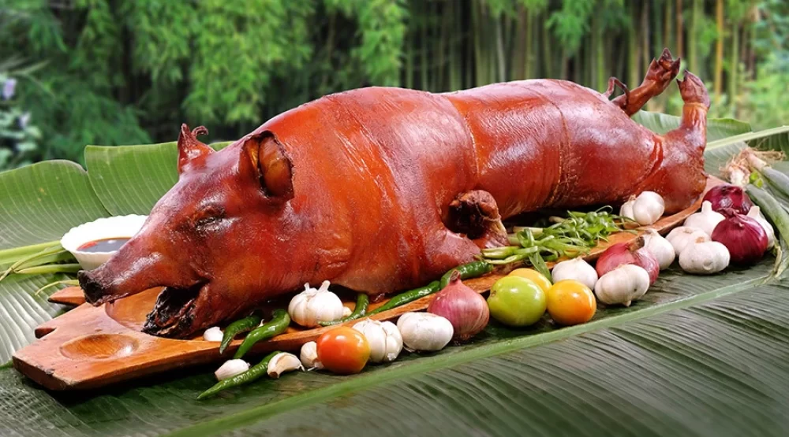

Popular Foods in the Philippines

Adobo
Savory stew of meat marinated in vinegar, soy sauce, garlic, and spices.

Sinigang
Sour tamarind-based soup with pork, shrimp, or fish and vegetables.

Lechon
Crispy roasted whole pig, often served at celebrations.